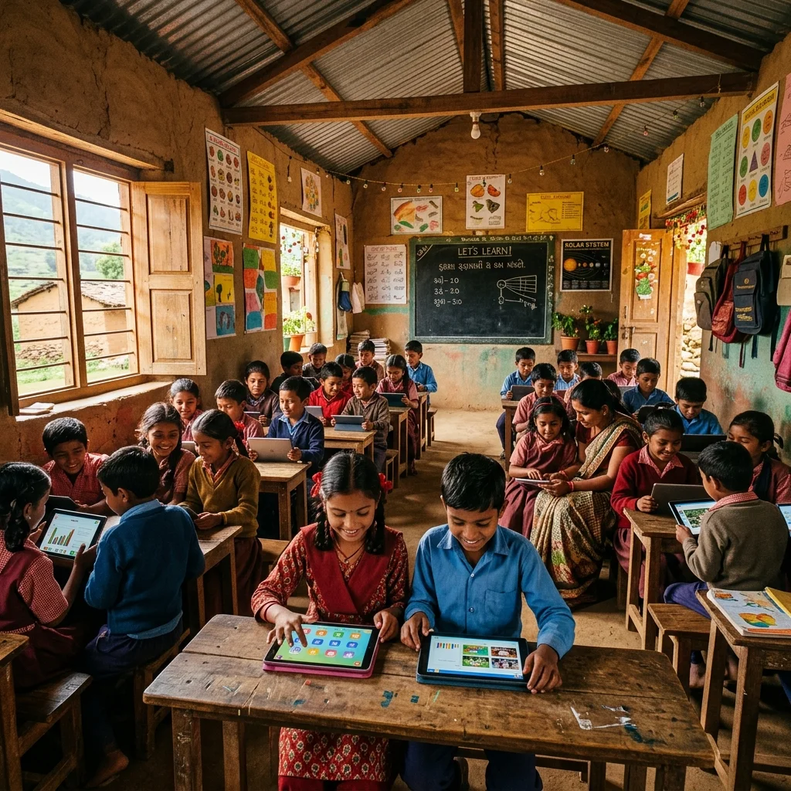
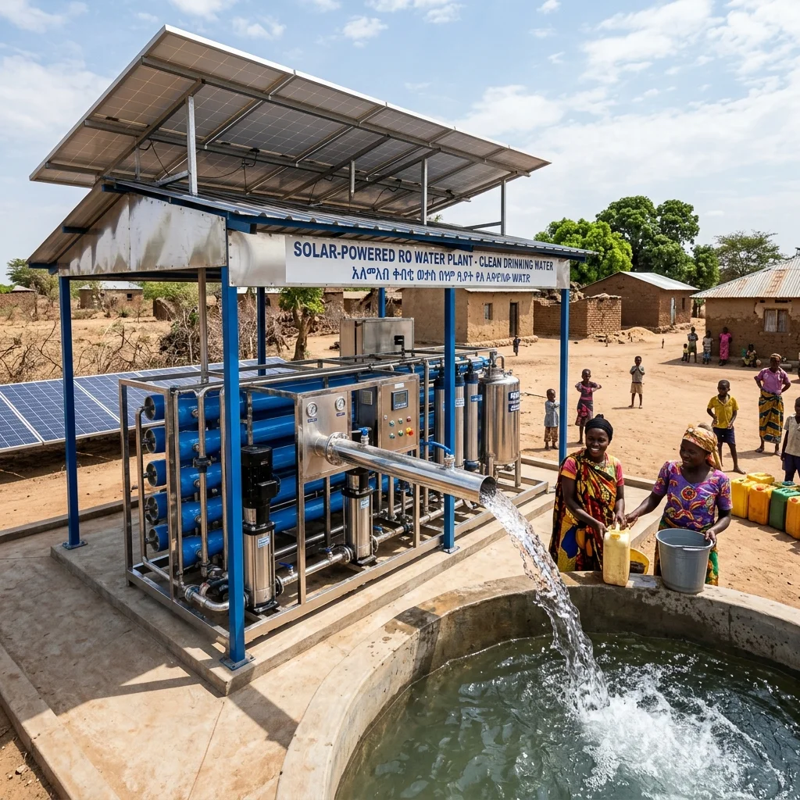
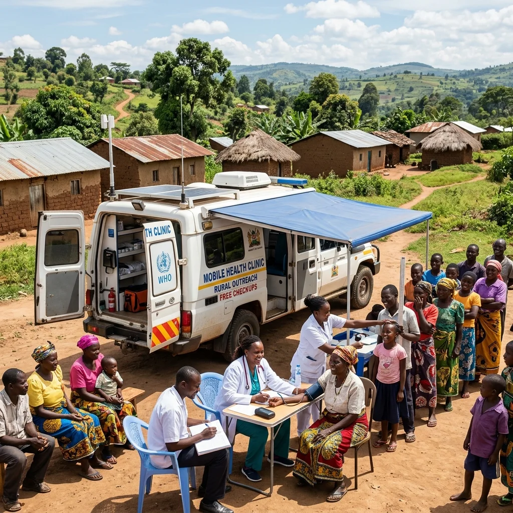

6 Active Humanitarian Drives — every campaign, fund allocation, and field deployment transparently tracked, audit-verified, and mapped to real beneficiaries.
Key moments that shaped our humanitarian programs and expanded our reach.
Filter by category to find programs that match your passion. Every card shows real‑time fundraising data, beneficiary counts, and direct action buttons.

Active EducationSolar-powered tablet labs and satellite internet equipping remote schools with daily STEM modules and real-time progress tracking.
 Enrolling
Education
Enrolling
Education
Full scholarship packages for tribal girls — school fees, books, uniforms, and monthly STEM mentorship sessions.

Active Clean WaterCommunity reverse-osmosis filtration plants in Rajasthan villages facing arsenic contamination, supplying safe water daily.

Enrolling HealthcareSpecialized 4×4 clinic vans running free health camps, diagnostics, and vaccinations in remote Rajasthan districts.
Community-run kitchens serving nutritious meals daily to children, elderly, and daily wage workers in underserved areas.
Replacing kerosene lamps with decentralized solar arrays — powering schools, vaccine fridges, and homes in rural areas.
Your support directly fuels the programs you see above. Every donation is tracked and verified, with full transparency on how your funds are used.
Every transaction tracked in real-time on StackPortal
All programs independently audited annually
Local volunteers lead every program on the ground